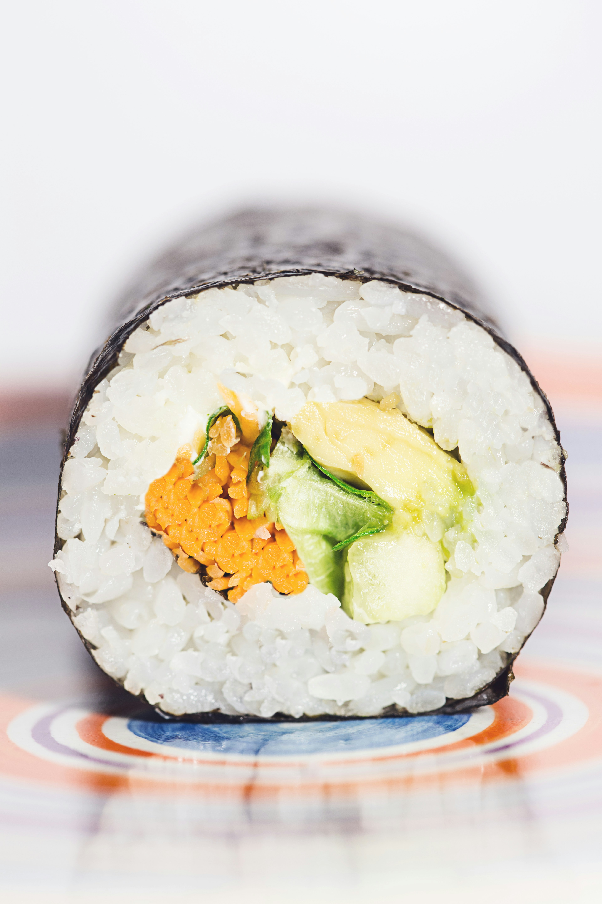

Odin Recipes
Home
Sushi Recipe

Description of dish;
Sushi is a Japanese dish that features medium-grained rice cooked in vinegar, served with raw or cooked seafood and a variety of toppings or fillings. Contrary to popular belief, rice is the main component of sushi, not raw fish.
Ingredigents;
- 1 & 1/3 cups water
- 2/3 cup uncooked short-grain white rice
- 3 tablespoons rice vinegar
- 3 tablespoons white sugar
- 1 & 1/2 teaspoons salt
- 4 sheets nori seaweed sheets
- 1/2 pound (lb) imitation crabmeat, flaked
- 1 avocado - peeled, pitted & sliced
- 1/2 cucumber, peeled & cut into small strips
- 2 tablespoons pickled ginger
Cooking steps;
- Gather all ingredients. Preheat the oven to 300 degrees F (150 degrees C).
- Bring water to a boil in a medium pot; stir in rice. Reduce heat to medium-low, cover, and simmer until rice is tender and water has been absorbed, 20 to 25 minutes.
- Mix rice vinegar, sugar, and salt in a small bowl. Gently stir into cooked rice in the pot and set aside.
- Lay nori sheets on a baking sheet.
- Heat nori in the preheated oven until warm, 1 to 2 minutes.
- Center 1 nori sheet on a bamboo sushi mat. Use wet hands to spread a thin layer of rice on top. Arrange 1/4 of the crabmeat, avocado, cucumber, and pickled ginger over rice in a line down the center.
- Lift one end of the mat and roll it tightly over filling to make a complete roll. Repeat with remaining ingredients.
- Use a wet, sharp knife to cut each roll into 4 to 6 slices.
Try a different recipe!